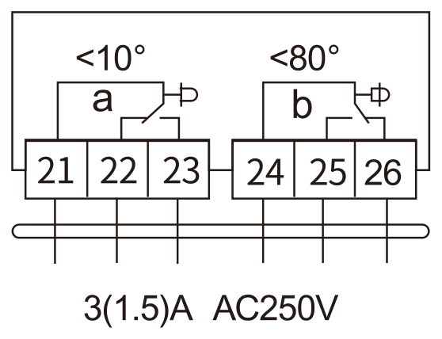
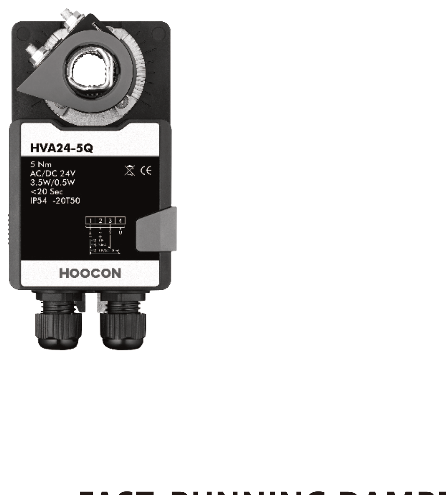
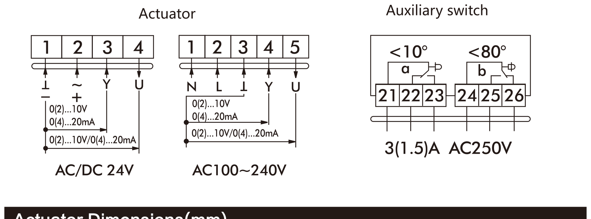
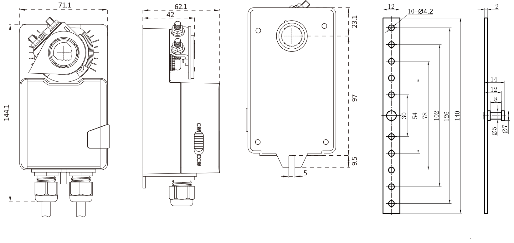

hoocon.ru
Вспомогательный переключатель
| Переключатель a | Клеммы 21, 22 | Клеммы 21, 23 |
| 0–10° | Замкнуто | Разомкнуто |
| 10–90° | Разомкнуто | Замкнуто |
| Переключатель b | Клеммы 24, 25 | Клеммы 24, 26 |
| 0–80° | Разомкнуто | Замкнуто |
| 80–90° | Замкнуто | Разомкнуто |
*Установите угол переключателя в соответствии с требованием заказчика

Внимание
1. Запрещается использовать электропривод заслонки вне указанной области применения, особенно в авиационной технике.
2. Вскрытие корпуса привода разрешено только производителю. Внутри нет компонентов, которые пользователь может заменять или ремонтировать.
3. Устройство содержит электрические и электронные компоненты, в связи с чем недопустима утилизация вместе с бытовыми отходами. Необходимо соблюдать все действующие правила и инструкции, относящиеся к данной конкретной местности.
2. Вскрытие корпуса привода разрешено только производителю. Внутри нет компонентов, которые пользователь может заменять или ремонтировать.
3. Устройство содержит электрические и электронные компоненты, в связи с чем недопустима утилизация вместе с бытовыми отходами. Необходимо соблюдать все действующие правила и инструкции, относящиеся к данной конкретной местности.
ООО «ХОГОН»
Юридический адрес:
143440, Московская область, го. Красногорск, пгт. Путилково,
тер. Гринвуд, стр. 7, помещ. 98
Многоканальный телефон: 8 800 350-58-98
По вопросам сотрудничества: info@hoocon.ru
Отдел продаж: sales@hoocon.ru
www.hoocon.ru
143440, Московская область, го. Красногорск, пгт. Путилково,
тер. Гринвуд, стр. 7, помещ. 98
Многоканальный телефон: 8 800 350-58-98
По вопросам сотрудничества: info@hoocon.ru
Отдел продаж: sales@hoocon.ru
www.hoocon.ru
ООО «Чемпион-Тэк»
Юридический адрес:
220030 Минск, пр-т Независимости 32А, пом.11
Многоканальный телефон: +375 29 372 6888
По вопросам сотрудничества: ichampiontech@yandex.ru
220030 Минск, пр-т Независимости 32А, пом.11
Многоканальный телефон: +375 29 372 6888
По вопросам сотрудничества: ichampiontech@yandex.ru
Руководство по эксплуатациипропорциональный привод
hoocon.ru
hoocon.ru

Привод ускоренного срабатывания — пропорциональное управление
Для управления воздушными заслонками в системах HVAC (отопления, вентиляции и кондиционирования воздуха)
- Крутящий момент: 5 Нм
- Время поворота: < 20 с (90°)
- Номинальное напряжение: AC/DC 24 В; AC 100…240 В
- Упр. сигнал Y: 0(2)…10 В= / 0(4)…20 мА (спецзаказ)
- Обратная связь U: 0(2)…10 В= / 0(4)…20 мА (спецзаказ)
- Исполнение «S» включает 2 группы вспомогательных переключателей.
Технические характеристики
| HVA24-5Q / HVA24S-5Q | HVA230-5Q / HVA230S-5Q | |
| Номинальное напряжение | AC/DC 24 В, 50/60 Гц | AC 100…240 В, 50/60 Гц |
| Потребляемая мощность | 3,5 Вт под нагрузкой 0,5 Вт удержание | |
| Сечение подключаемых проводов | 0,5 мм² | |
| Функциональные параметры | ||
| Площадь обслуживаемой заслонки | до 0,5 м² | |
| Время поворота | < 20 с (90°) | |
| Направление вращения | ползунком переключателя направления | |
| Ручное управление | расцепление редуктора кнопкой, с самовозвратом | |
| Угол поворота | Макс. 90° | |
| Уровень звуковой мощности | макс. 55 дБ(А) | |
| Индикация положения | Механический указатель | |
| Условия эксплуатации | ||
| Класс защиты | III (безопасное сверхнизкое напряжение) | II (все изолировано / полная изоляция) |
| Степень защиты корпуса | IP54 | |
| Температура окружающей среды | –20…+50 °C | |
| Температура хранения | –30…+80 °C | |
| Испытание на влажность | 5…95 % относительной влажности, без конденсата / EN 60730-1 | |
| Габаритные размеры / Масса | ||
| Габаритные размеры (Д × Ш × В) | См. «Габаритные размеры» | |
| Длина вала заслонки | ≥ 50 мм | |
| Диаметр вала заслонки | круглый 6…16 мм, квадратный 5×5…12×12 мм | |
| Масса | < 0,8 кг | |
Схема подключения

Габаритные размеры привода (мм)

Изменение направления вращения
Направление вращения задаётся ползунком реверсивного переключателя (см. рисунок).
Заводская установка — CW: при увеличении управляющего сигнала привод вращается по часовой стрелке.

hoocon.ru